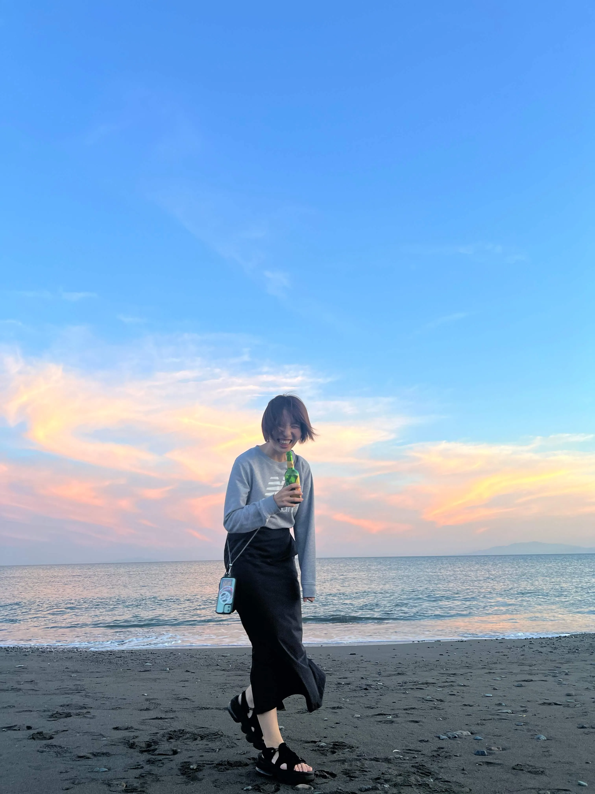

GREETING
PROFILE

FUMINO MIDORIKAWA
作業療法士として7年間、老若男女さまざまな方と関わる中で、相手のニーズを引き出すコミュニケーション力を培ってきました。この経験を活かし、「誰に・何を伝えるべきか」を整理したうえで、成果につながるデザインをご提案いたします。
旅行・キャンプ・音楽・スポーツなど幅広い経験を通して感性を磨き、国内38都道府県・海外8ヶ国を訪れてきました。多様な価値観に触れてきたこともデザインに活かしています。
CAREER
多様な現場で揉まれた、北の大地での学生時代。2浪を経て北海道大学へ。学業の傍ら、飲食・物流・イベント物販など、ジャンルを問わず多様なアルバイトに熱中しました。「現場で働く人のリアル」や「多様な価値観」を肌で感じ、フットワークの軽さを養った4年間です。>
作業療法士として、1万人との対話からニーズを形に。作業療法士として病院で7年間勤務。のべ1万人の患者様と関わる中で、相手の本音を引き出すコミュニケーション力を磨きました。また、リーダーとして外来部門の立ち上げを経験。ゼロから形にするバイタリティと、プロジェクトを完遂する責任感を培いました。
医療の視点 × 最新技術で届ける、優しいデザイン。現在はフリーランスのWebデザイナー兼作業療法士として活動中。 リハビリの視点を活かした「使う人にストレスを与えない設計」が得意です。AIを駆使してスマートに実制作を進め、その分できた時間でお客様の想いをじっくり伺う。そんな、アナログな温かさと最新の効率性を掛け合わせた制作スタイルを大切にしています。
THREE "WA"
リハビリの現場で何より大切だったのは、言葉にならない患者様の不安や希望を「聴く」ことでした。デザインにおいても、まずはあなたの想いを丁寧に紐解く「対話」から始めます。
見る人の心にすっと馴染み、信頼を感じさせる「調和」の取れたデザインを追求します。
「作って終わり」にせず、想いが届き、成果や集客へとつながるデザインを大切にしています。
SKILLS & INFO
制作内容
使用ツール
資格
※上記以外の時間帯も柔軟に対応可能です
※24時間以内の返信を徹底しております